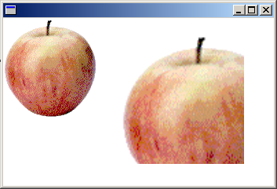

The Graphics class provides several DrawImage methods, some of which have source and destination rectangle parameters that you can use to crop and scale images.
The following example constructs an Image object from the file Apple.gif. The code draws the entire apple image in its original size. The code then calls the DrawImage method of a Graphics object to draw a portion of the apple image in a destination rectangle that is larger than the original apple image.
The DrawImage method determines which portion of the apple to draw by looking at the source rectangle, which is specified by the third, fourth, fifth, and sixth arguments. In this case, the apple is cropped to 75 percent of its width and 75 percent of its height.
The DrawImage method determines where to draw the cropped apple and how big to make the cropped apple by looking at the destination rectangle, which is specified by the second argument. In this case, the destination rectangle is 30 percent wider and 30 percent taller than the original image.
Image image(L"Apple.gif");
UINT width = image.GetWidth();
UINT height = image.GetHeight();
// Make the destination rectangle 30 percent wider and
// 30 percent taller than the original image.
// Put the upper-left corner of the destination
// rectangle at (150, 20).
Rect destinationRect(150, 20, 1.3 * width, 1.3 * height);
// Draw the image unaltered with its upper-left corner at (0, 0).
graphics.DrawImage(&image, 0, 0);
// Draw a portion of the image. Scale that portion of the image
// so that it fills the destination rectangle.
graphics.DrawImage(
&image,
destinationRect,
0, 0, // upper-left corner of source rectangle
0.75 * width, // width of source rectangle
0.75 * height, // height of source rectangle
UnitPixel);
The following illustration shows the original apple and the scaled, cropped apple.

Â
Â